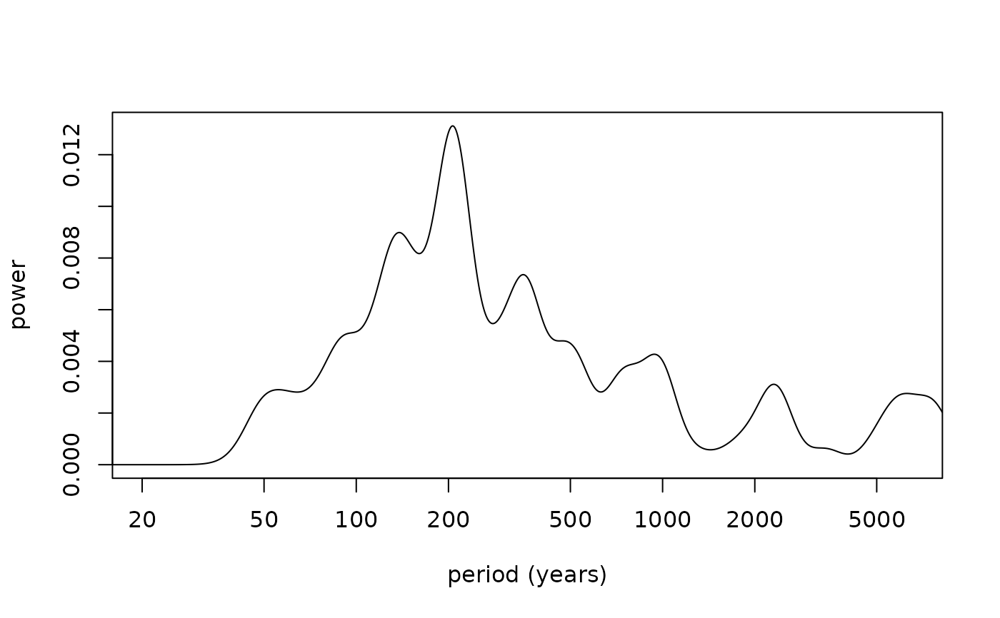
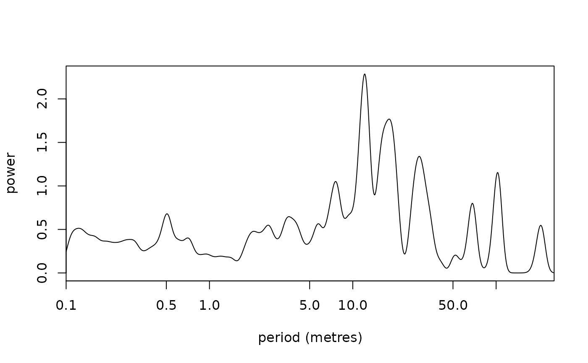
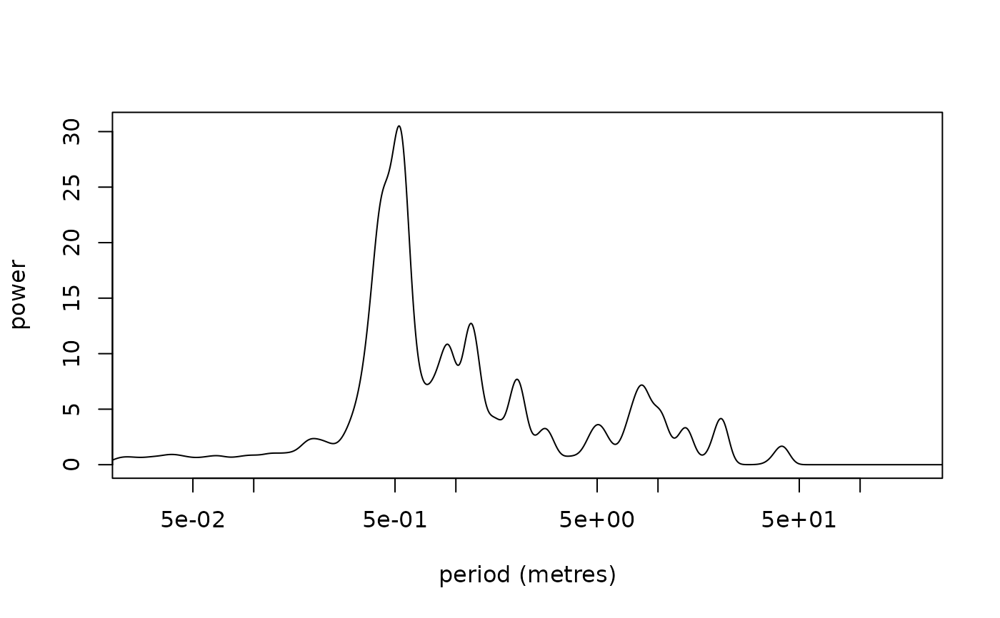

Plot the average spectral power of a wavelet spectra
Source:R/plot_avg_wavelet.R
plot_avg_wavelet.RdPlot the average spectral power of a wavelet spectra using the results of
the analyse_wavelet function.
Usage
plot_avg_wavelet(
wavelet = NULL,
y_lab = "Power",
x_lab = "period (metres)",
keep_editable = FALSE
)Arguments
- wavelet
Wavelet result whose time-averaged power (
Power.avg) is plotted against period (log-scaled period axis): the list returned byanalyse_wavelet. Required (Default=NULLgives an error).- y_lab
Label of the y-axis (power axis) (character).
Default="Power".- x_lab
Label of the x-axis (period axis) (character).
Default="period (metres)".- keep_editable
Keep the graphical parameters (
par) after plotting, so that extra elements can be added (logical). WithFALSEthe previousparsettings are restored on exit.Default=FALSE.
Examples
# \donttest{
#Example 1. Plot the average spectral power of the wavelet spectra of
# the Total Solar Irradiance data set of Steinhilber et al., (2012)
TSI_wt <-
analyse_wavelet(
data = TSI,
dj = 1/200,
lowerPeriod = 16,
upperPeriod = 8192,
verbose = FALSE,
omega_nr = 6
)
plot_avg_wavelet(wavelet=TSI_wt,
y_lab= "power",
x_lab="period (years)",
keep_editable=FALSE)

#Example 2. Plot the average spectral power of the wavelet spectra of \cr
# the magnetic susceptibility data set of Pas et al., (2018)
mag_wt <-
analyse_wavelet(
data = mag,
dj = 1/100,
lowerPeriod = 0.1,
upperPeriod = 254,
verbose = FALSE,
omega_nr = 10
)
plot_avg_wavelet(wavelet=mag_wt,
y_lab= "power",
x_lab="period (metres)",
keep_editable=FALSE)

#Example 3. Plot the average spectral power of the wavelet spectra of
#the greyscale data set of Zeeden et al., (2013)
grey_wt <-
analyse_wavelet(
data = grey,
dj = 1/200,
lowerPeriod = 0.02,
upperPeriod = 256,
verbose = FALSE,
omega_nr = 8
)
plot_avg_wavelet(wavelet=grey_wt,
y_lab= "power",
x_lab="period (metres)",
keep_editable=FALSE)

# }